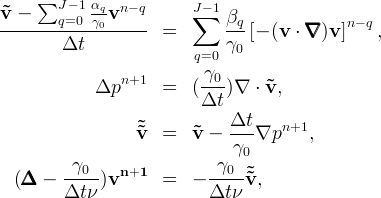

Usage: Incompressible Navier-Stokes Solver
Here, we will demonstrate how to run a first example with the incompressible Navier-Stokes solver and
briefly explain the options of the solver specified in the input file.
The explanations will be based on the example file QuadMesh.xml that can be found in
Nektar++/solvers/IncNavierStokesSolver.
Briefly, the Navier-Stokes solver computes the solution of the Navier-Stokes equation in two space dimensions in terms of the primitive variables velocity
v =(u,v) and pressure p for a fluid with kinematic viscosity 


How to get started
Compiling the code
Follow the compile instructions and build the Nektar++ library, the solvers and the utilities.
Running a first example
The folder Nektar++/solvers/IncNavierStokesSolver contains several *.xml files.
These are input files for the Navier-Stokes solver specifying the geometry (i.e. the mesh and
the spectal/hp expansion), the parameters and boundary conditions.
Further details on the structure of the input file can be found below.
Now, lets try to run the QuadMesh.xml example that can be found in
Nektar++/solvers/IncNavierStokesSolver:
- Copy the input file,
QuadMesh.xmlto the directory where the solver is compiled, e.g.Nektar++/solvers/IncNavierStokesSolver/build/IncNavierStokesSolver. - Run the code by typing
./IncNavierStokesSolver QuadMesh.xml
QuadMesh.fld.
This file is formatted in the Nektar++ output format (see here).To visualise the solution, we can convert the fld-file into Vtk, Gmsh or Tecplot file formats using the Post-processing tools in
Nektar++/utilities/builds/PostProcessing/.
Here, we will demonstrate how to convert the fld-file into Vtk-file format.
The Visualization Toolkit (VTK) is an open-source visualisation library for 3D computer graphics.
There is a wide range of open source GUIs available for VTK, e.g. paraview.
We convert the fld-file into Vtk-file format by typing
../../../utilities/builds/PostProcessing/FldToVtk QuadMesh.xml QuadMesh.fld
Nektar++/solvers/IncNavierStokesSolver/build/IncNavierStokesSolver.)
This should have been created the file QuadMesh.vtu in the current directory.
The *.vtu files can now be opened with paraview, for example.

Input file options
Description of the mesh
The mesh is described between the XML tags
<GEOMETRY> ... </GEOMETRY>
Description of the spectral/hp expansion
Between the XML tags
<EXPANSIONS> ... </EXPANSIONS>
<EXPANSIONS> <E COMPOSITE="C[0]" NUMMODES="3" TYPE="MODIFIED" /> </EXPANSIONS>
NUMMODES specifies the number of expansion modes and TYPE defines the type of basis functions. TYPE="MODIFIED" will choose the modified semi-orthogonal expansion basis, which was first discussed by Dubiner [2], to approximate the variables.
Details on this expansion basis can be found in Chapter 3.2.3 in the book of Karniadakis and Sherwin [1].
Description of parameters, solver information and boundary conditions
In between the XML tags
<CONDITIONS> ... </CONDITIONS>
Solver information
The solver information is given in between the XML tags
<CONDITIONS>
<SOLVERINFO>
...
</SOLVERINFO>
...
</CONDITIONS>
<SOLVERINFO>
<I PROPERTY="EQTYPE" VALUE="UnsteadyNavierStokes"/>
<I PROPERTY="AdvectionForm" VALUE="Convective"/>
<I PROPERTY="TimeIntegrationMethod" VALUE="IMEXOrder2"/>
</SOLVERINFO>
EQTYPE specifies the equation to be solved. We set it to the VALUE="UnsteadyNavierStokes", i.e. we want to solve the equation

AdvectionForm to Convective, i.e. we compute the advection term as
The incompressible Navier-Stokes equations are solved in time using a velocity correction splitting scheme combined with stiffly-stable time integration. Briefly, the time integration scheme consists of the following steps:

where J is the integration order and γ₀, αq and βq are the stiffly stable time integration coefficients given in the table below.
| 1st order | 2nd order | 3rd order | |
|---|---|---|---|
| γ₀ | 1 | 3/2 | 11/6 |
| α₀ | 1 | 2 | 3 |
| α₁ | 0 | -1/2 | -3/2 |
| α₂ | 0 | 0 | 1/3 |
| β₀ | 1 | 2 | 3 |
| β₁ | 0 | -1 | -3 |
| β₂ | 0 | 0 | 1 |
TimeIntegrationMethod to
IMEXOrder1,
IMEXOrder2 or
IMEXOrder3.
Parameters
Between the XML tags
<CONDITIONS>
<PARAMETERS>
...
</PARAMETERS>
...
</CONDITIONS>
<PARAMETERS> <P> TimeStep = 0.001 </P> <P> NumSteps = 100 </P> <P> IO_CheckSteps = 10 </P> <P> IO_InfoSteps = 10 </P> <P> Kinvis = 1.0 </P> </PARAMETERS>
Kinvis. The parameter
TimeStep defines Δt in the time integration scheme and NumSteps is the total number of steps the time integration
scheme will perform. That means the physical endtime will be TimeStep*NumSteps. IO_CheckSteps specifies the number of time steps that will be performed between writing the solution to output files. These output files are named <INPUTFILENAME>_<NUMBER>.chk. They can be converted into Vtk, Tecplot or Gmsh file formats using the same Post-Processing tools as for the fld-files. The conversion tools can be found in Nektar++/utilities/builds/PostProcessing/.IO_InfoSteps specifies the number of time steps between displaying information on the console.
Boundary and initial conditions
Before any other conditions for the solver can be set, we need to specify the variables used in the Navier-Stokes solver by including the lines<VARIABLES> <V ID="0"> u </V> <V ID="1"> v </V> <V ID="2"> p </V> </VARIABLES>
To specify boundary conditions, we first need to identify the different boundary regions defining one region for each boundary type, e.g. one for the inflow boundary, one for walls and one for the outflow boundary with
<BOUNDARYREGIONS> <B ID="0"> C[1] </B> <B ID="1"> C[2] </B> <B ID="2"> C[3] </B> </BOUNDARYREGIONS>
C[X] are the composites, which consist of a number of edges, defined in the
<GEOMETRY> ... </GEOMETRY> section of the input file.Now, we can specify the boundary conditions between the XML tags
<CONDITIONS>
<BOUNDARYCONDITIONS>
...
</BOUNDARYCONDITIONS>
...
</CONDITIONS>
<BOUNDARYCONDITIONS>
<REGION REF="0">
<D VAR="u" VALUE="0" />
<D VAR="v" VALUE="0" />
<N VAR="p" USERDEFINEDTYPE="H" VALUE="0"/>
</REGION>
<REGION REF="1">
<D VAR="u" VALUE="y*(1-y)" />
<D VAR="v" VALUE="0" />
<N VAR="p" USERDEFINEDTYPE="H" VALUE="0"/>
</REGION>
<REGION REF="2">
<N VAR="u" VALUE="0" />
<N VAR="v" VALUE="0" />
<D VAR="p" VALUE="0" />
</REGION>>
</BOUNDARYCONDITIONS>
The XML tags
D and N identify the boundary condition to be of Dirichlet or Neumann type, respectively.
For example, D VAR="u" VALUE="0" means set u=0 and N VAR="u" VALUE="0" means set Furthermore, the boundary condition
D VAR="u" VALUE="y*(1-y)" sets a parabolic inflow profile and N VAR="p" USERDEFINEDTYPE="H" VALUE="0" specifies high-order boundary conditions for the pressure of the form

The initial conditions are defined between the XML tags
<CONDITIONS>
<INITIALCONDITIONS>
...
</INITIALCONDITIONS>
...
</CONDITIONS>
<INITIALCONDITIONS>
<F VAR="u" VALUE="y*(1-y)" />
<F VAR="v" VALUE="0" />
<F VAR="p" VALUE="0" />
</INITIALCONDITIONS>
To compare the numerical solution with an analytical solution, the analytical solution can be specified in between the XML tags
<CONDITIONS>
<EXACTSOLUTION>
...
</EXACTSOLUTION>
...
</CONDITIONS>
<EXACTSOLUTION>
<F VAR="u" VALUE="y*(1-y)" />
<F VAR="v" VALUE="0" />
<F VAR="p" VALUE="-2*Kinvis*(x-1)" />
</EXACTSOLUTION>
That concludes the brief introduction into the usage of the incompressible Navier-Stokes solver. Further details can be found in the doxygen documentation of Nektar++ (see documentation compile instructions) and in the book of Karniadakis and Sherwin [1].
[1] G.E. Karniadakis and S.J. Sherwin: Spectral/hp Element Methods for Computational Fluid Dynamics, Oxford Science Publications, 2005
[2] M. Dubiner: Spectral methods on triangles and other domains, J. Sci. Comp., 6, 345-390, 1991